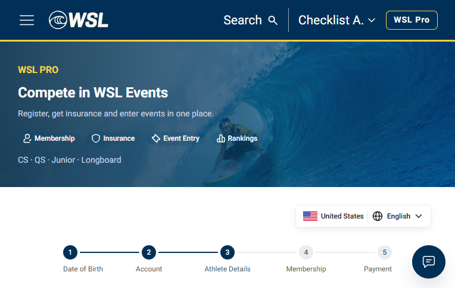
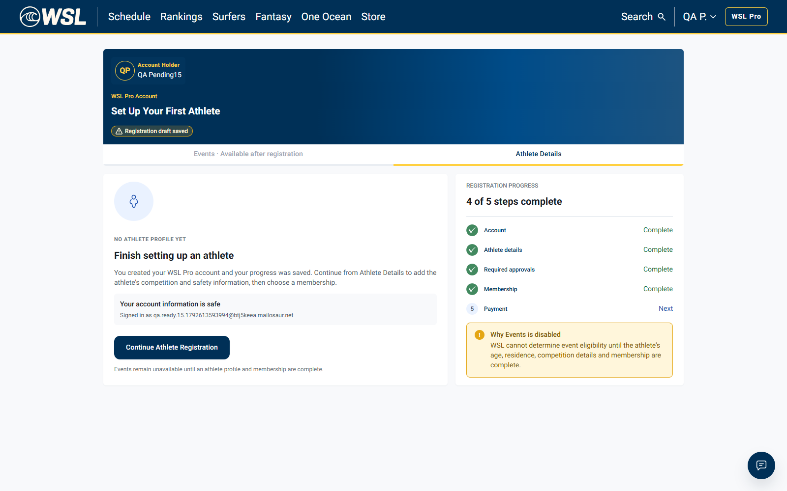
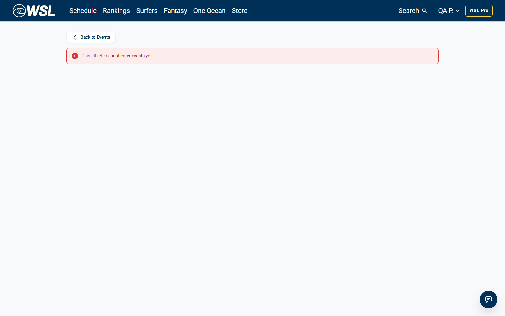
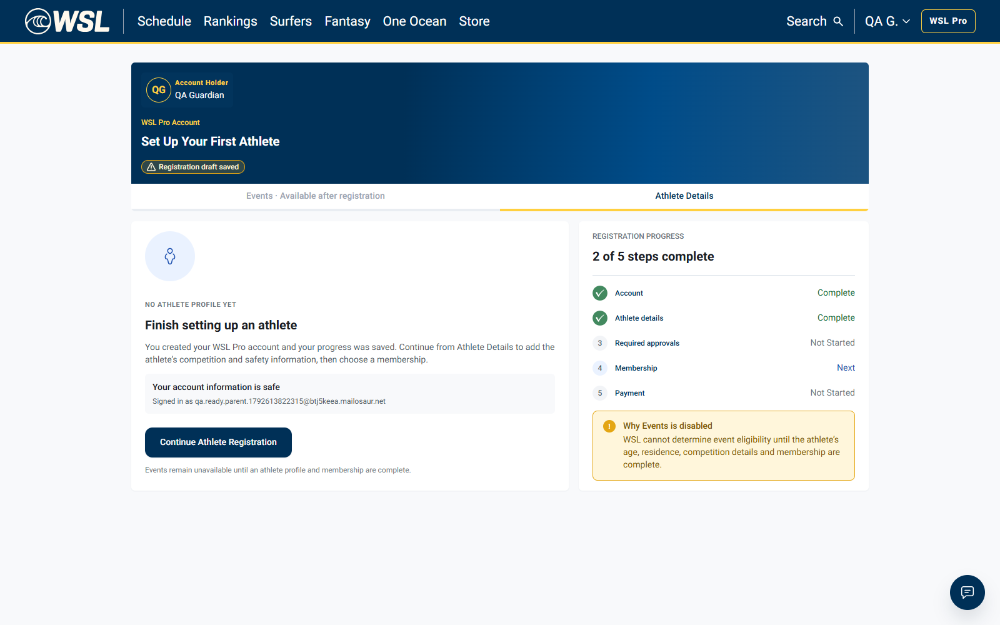
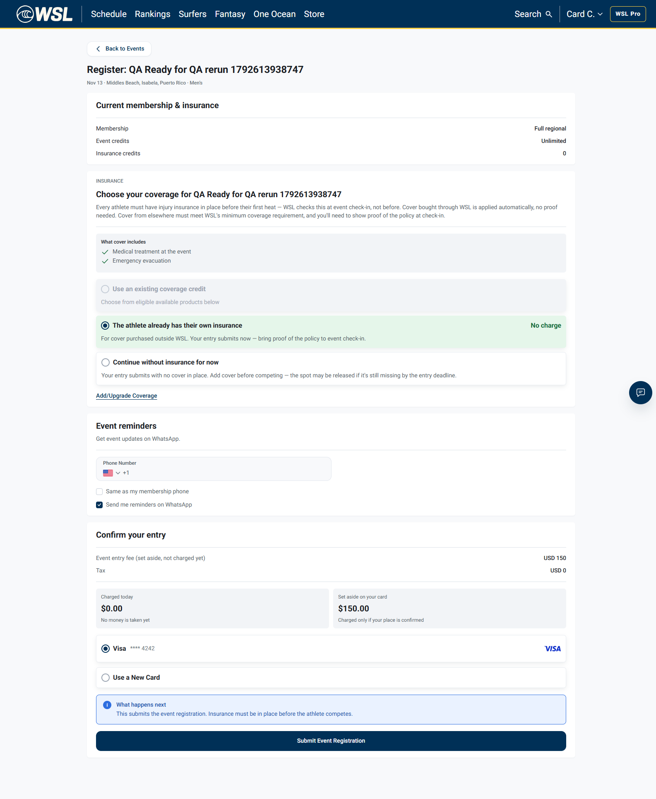
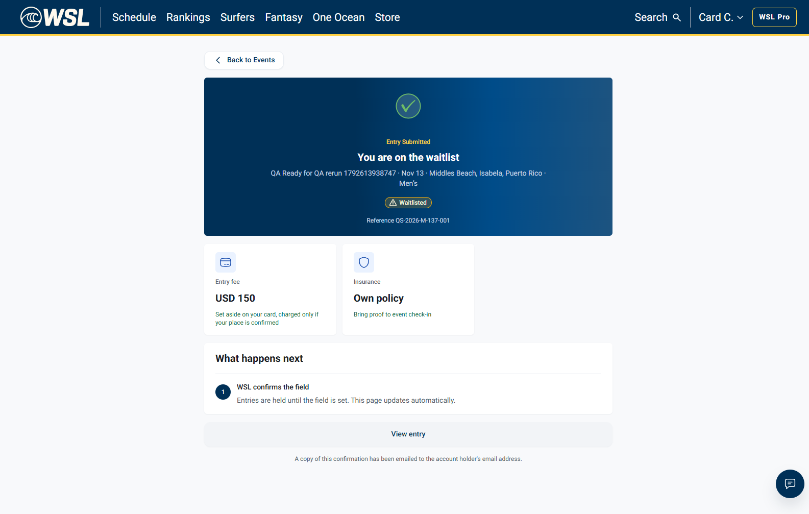
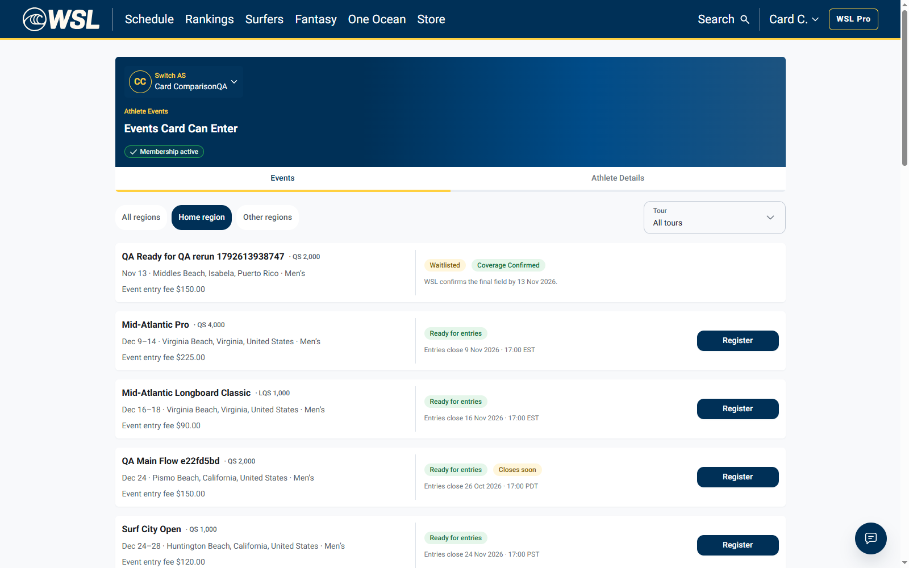
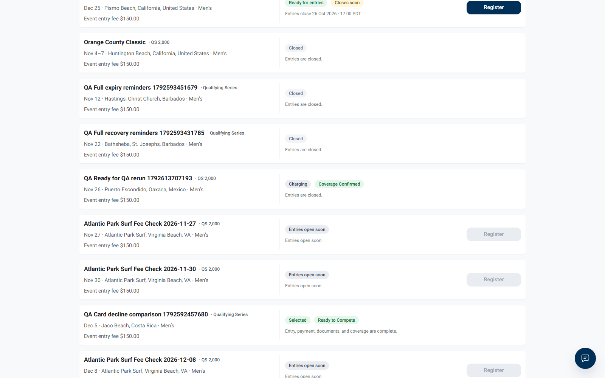
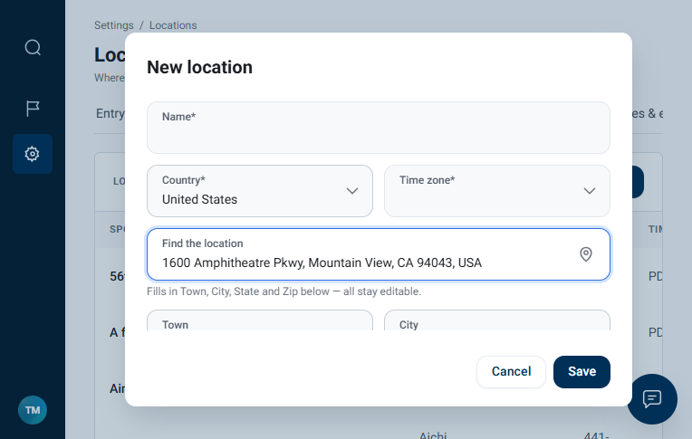

Scope: seven bugs reported by the current Jira user and in Ready for QA at the start of this pass. Target is dev, as the developer comments request; no staging access or staging result is claimed. Execution 21 October 2026, approximately 23:12–23:21 Cairo (raw timestamps UTC). Screenshots are actual pages; recordings distinguish API fixture setup from browser actions. No app code, shared policy, AWS role, deployment or Jira assignee changed. Two earlier Draft QA events were created before a newly required rating blocked their Tentative transition; they were not used for acceptance evidence. Fresh entry fixtures supply rating 2,000. Initial incorrect harness assertions and incomplete payment setup remain documented, not counted as product failures. Three passing access/boundary tickets were moved to Ready for UAT; four remain in Ready for QA for the reasons below. Evidence comments were added to all seven tickets.
| Ticket | Result | Action |
|---|---|---|
| WSL-9584 | PASS | Moved to Ready for UAT |
| WSL-9587 | PASS | Moved to Ready for UAT |
| WSL-9588 | PASS | Moved to Ready for UAT |
| WSL-9580 | PARTIAL / UI focus check inconclusive | Keep Ready for QA |
| WSL-9578 | PARTIAL PASS | Keep Ready for QA pending Single Event variant |
| WSL-9589 | BLOCKED | Keep Ready for QA |
| WSL-9585 | FAIL | Keep Ready for QA; report still failing |
PASS · Moved to Ready for UAT
Fresh dev API checks returned HTTP 422 for dependents aged exactly 18 and 19, with guardianCertified true AND false. Every refusal returned reason adult_registers_themselves, a dateOfBirth field error, and “An adult athlete registers as themselves.” An otherwise-valid age-17 dependent control returned HTTP 201. Exactly-18 account-holder UI still permits For My Child. All 9 grouped checks passed. Setup was via API; recordings include the real registration UI plus explicitly labelled API reproduction panels. No claim that adult requests were submitted through the browser form.
adult-1.webm
adult-2.webm
adult-3.webm

adult-results.json · adult-1.webm · adult-2.webm · adult-3.webm · adult-boundary.png
PASS · Moved to Ready for UAT
Athlete 01a16018-be71-723d-b3b8-c1b1aaf64dd7; age band minor_13_17; actual status pending_parental_document_approval. Consent/required documents were not completed. GET /events returned HTTP 200 with events=[]; UI showed no event cards. GET /entries/options for the fresh QA event returned HTTP 422 / athlete.athlete_not_active / “This athlete cannot enter events yet.” Opening the event registration URL directly displayed that refusal with no Submit Event Registration button. The same event was accessible to the active adult positive control. Membership remains pending_payment after an actual test-mode confirmation in the first fixture attempt; no paid-awaiting-approval state is claimed. This verifies the ticket's pending-consent access restriction for this profile, with an active adult event-list positive control tested separately. Informational /entries/quote still returns HTTP 200, but it does not open a usable form and was not part of the ticket’s access acceptance criteria. The first harness verdict was corrected: quote denial was an over-broad assertion, and current under-13 state pending_documents differs from the historical pending_verification label. Raw diagnostics retained.
WSL-9587-final.webm


minor-final-results.json · WSL-9587-final.webm · WSL-9587-final-events.png · WSL-9587-final-direct.png
PASS · Moved to Ready for UAT
Athlete 01a1601c-3c08-750a-b8f9-c536585385b2; age band under_13; actual status pending_documents. Consent/required documents were not completed. GET /events returned HTTP 200 with events=[]; UI showed no event cards. GET /entries/options for the fresh QA event returned HTTP 422 / athlete.athlete_not_active / “This athlete cannot enter events yet.” Opening the event registration URL directly displayed that refusal with no Submit Event Registration button. The same event was accessible to the active adult positive control. COPPA/guardian consent was deliberately not completed. No paid membership is claimed. The dedicated waiting-for-approval design remains outside this access-control retest. Informational /entries/quote still returns HTTP 200, but it does not open a usable form and was not part of the ticket’s access acceptance criteria. The first harness verdict was corrected: quote denial was an over-broad assertion, and current under-13 state pending_documents differs from the historical pending_verification label. Raw diagnostics retained.
WSL-9588-final.webm

minor-final-results.json · WSL-9588-final.webm · WSL-9588-final-events.png · WSL-9588-final-direct.png
PARTIAL / UI focus check inconclusive · Keep Ready for QA
Two independent fixtures tested on dev. In the visible-browser run, first UI POST /entries returned HTTP 201, ref QS-2026-M-137-001, entry 01a1601e-c722-75bf-8254-a9b33c50120c, with an Idempotency-Key. The second already-open form still displayed Submit after an 8.5-second foreground wait. Clicking Submit there returned HTTP 409 / competition.already_entered and automatically navigated to https://app.dev.worldsurfleague.com/athlete-registration/events/01a1601d-fc7d-7108-bfc3-827ea10aabcf/entry/QS-2026-M-137-001. A separate distinct API submission also returned HTTP 409; GET /entries/options returned existingEntry with the same reference/entry ID. Backend rejection and redirect-after-refusal are solved. The automatic focus-return behavior is not certified: sampled browser telemetry reported BOTH tabs visible/focused, so an authentic background-to-visible transition was not established. Do not call the focus-only part definitively fixed or definitively regressed from this run. Manual tab-switch verification remains.
headed-events-submit.webm
headed-events-stale.webm


event-headed-results.json · headed-events-submit.webm · headed-events-stale.webm · headed-stale-form-after.png · headed-stale-after-refusal.png
PARTIAL PASS · Keep Ready for QA pending Single Event variant
Regional membership positive control 01a15ed1-e7f1-756f-a31e-bb2648c73ed8; event 01a1601d-fc7d-7108-bfc3-827ea10aabcf. Event List was mounted before entry submission from another tab and was not reloaded or navigated afterward. After returning to the list and observing for 9 seconds, the same card displayed Waitlisted / Coverage Confirmed and no Register action. Both independent runs passed this Regional check. Original issue also names the Single Event membership flow; that variant was not executed in this pass, so the whole ticket is not certified solved. New membership test confirmation did not fulfil in the minor fixture; no fabricated paid state or substituted Regional-as-Single-Event result is used.
headed-events-list.webm

event-results.json · event-headed-results.json · headed-events-list.webm · waitlisted-without-refresh.png
BLOCKED · Keep Ready for QA
Event 01a1601a-73ec-71f6-890c-388a16f3d6fd; entry 01a1601b-fb63-77d4-b2e1-f51be6a04975. Confirm & charge returned HTTP 200, but the backend entry remained Pending / payment Pending. The real athlete mounted card updated from Waitlisted to Charging without refresh, proving a state update but not the ticket’s confirmed-state acceptance. Follow-up at 2026-10-21T20:21:11.535Z still returned Pending/Pending. No Card payment succeeded history exists in this run. Therefore no successful confirmation or Selected / Ready to Compete transition can be judged; this is not evidence that the frontend fix failed. No repeated charge attempts, synthetic payment success, database activation, or refund was performed.
events-list.webm

event-results.json · confirmation-followup.json · events-list.webm · confirmed-without-refresh.png
FAIL · Keep Ready for QA; report still failing
Opened Tour Manager Settings > Locations > Add location. Chose United States, typed 1600 Amphitheatre Parkway, and selected the Google Places suggestion. City populated Mountain View; ZIP populated 94043. Time zone remained blank instead of America/Los_Angeles/Pacific. Exact failed check: “Location selection fills timezone automatically”; observed selector text was non-breaking whitespace. Other eight grouped address/phone checks passed. The location dialog was cancelled; no location was saved. Recording captures the genuine Google selection and blank timezone.
location-1.webm

location-results.json · location-1.webm · location-timezone.png
Detailed Markdown report · Structured outcomes · Initial minor setup diagnostics